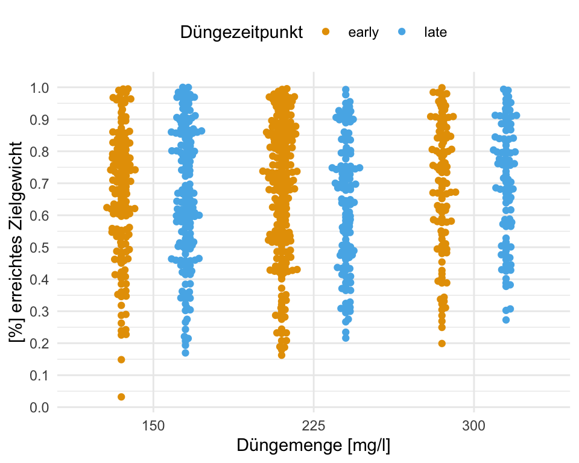
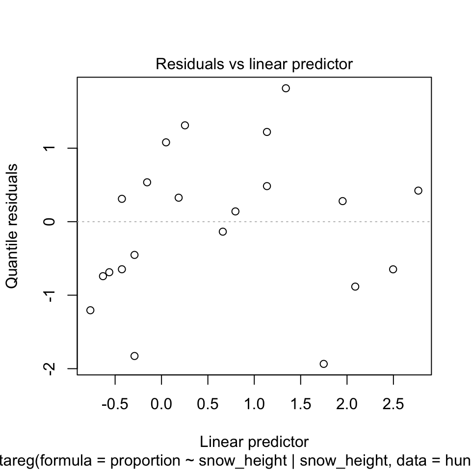
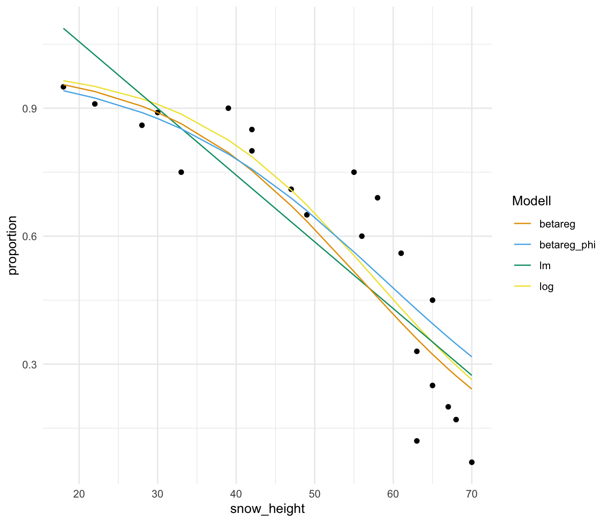
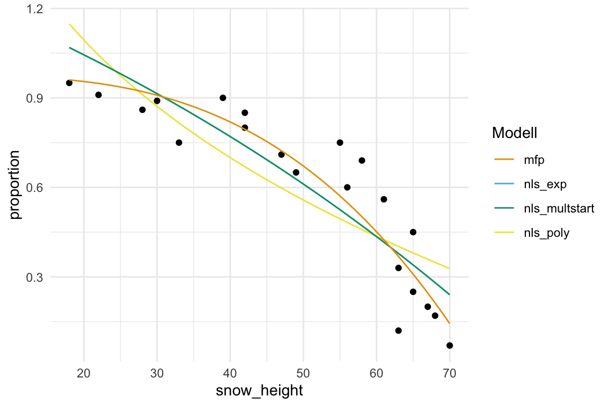
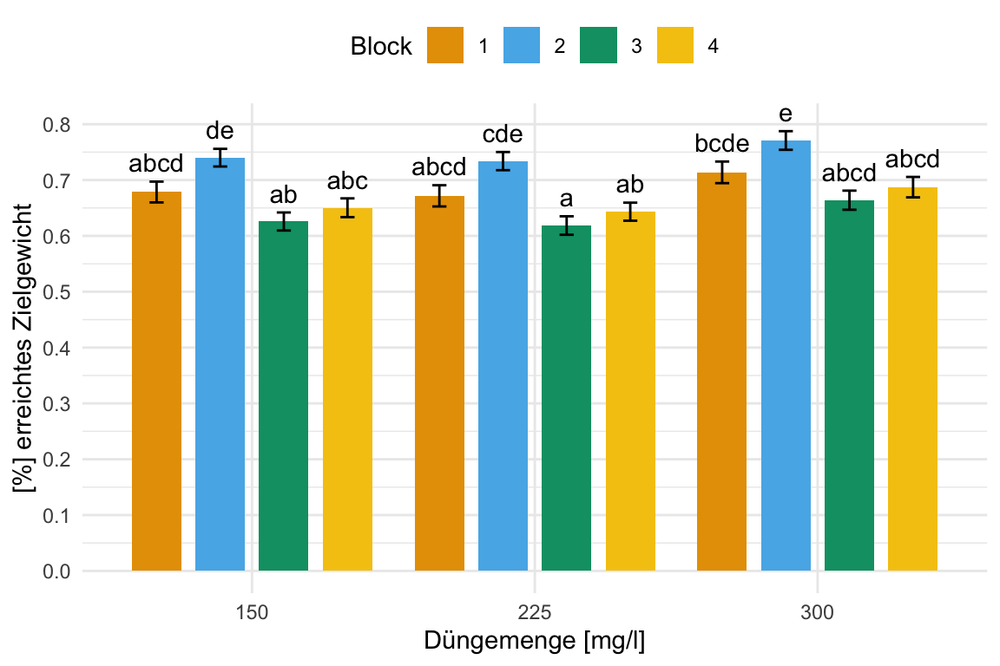
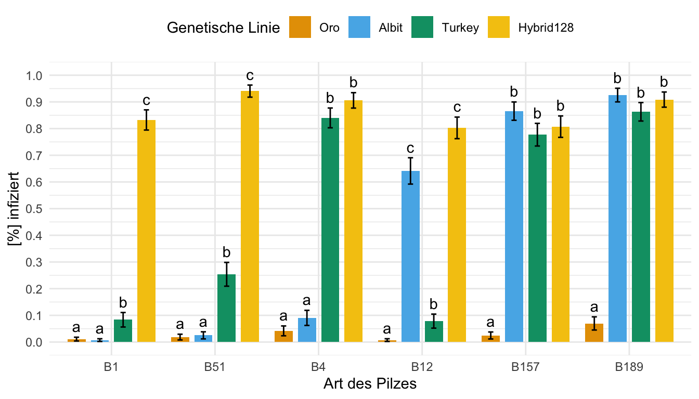

pacman::p_load(tidyverse, magrittr, broom, betareg, car,
see, performance, parameters, agridat, mfp,
emmeans, multcomp, rcompanion, ggbeeswarm,
marginaleffects, nls.multstart, conflicted)
conflict_prefer("select", "dplyr")
conflict_prefer("filter", "dplyr")
conflict_prefer("mutate", "dplyr")
conflicts_prefer(dplyr::summarise)
cb_pal <- c("#000000", "#E69F00", "#56B4E9", "#009E73",
"#F0E442", "#0072B2", "#D55E00", "#CC79A7")49 Beta Regression
Letzte Änderung am 09. January 2024 um 21:06:07

link zu test auf anteile
wirkungsgrad?
Selten n
Im folgenden Kapitel
Moment, ich möchte nur zwei Wahrscheinlichkeiten \(p_1\) und \(p_2\) vergleichen!
Wenn du nur wissen willst, ob sich zwei Wahrscheinlichkeiten unterscheiden, dann musst du einmal in dem Kapitel Vergleich zweier Anteile \(p_1\) und \(p_2\) nachschauen. Dort zeige ich dir wie du dann einen statistischen Test rechnen kannst um rauszufinden ob sich \(0.5\) signifikant von \(0.7\) unterscheidet. In diesem Kapitel schauen wir uns dann pro Faktor sehr viele Wahrscheinlichkeiten als Outcome an.
Daher sieht unser Modell wie folgt aus. Wir haben ein \(y\) und \(p\)-mal \(x\). Wobei \(p\) für die Anzahl an Variablen auf der rechten Seite des Modells steht. Im Weiteren ist unser \(y\) normalverteilt. Das ist hier sehr wichtig, denn wir wollen ja eine multiple gaussian lineare Regression rechnen.
\[ y \sim x_1 + x_2 + ... + x_p \]
Weitere Tutorien für die Beta Regression
Wie immer gibt es auch für die Frage nach dem Tutorium für die Beta Regression verschiedene Quellen. Ich kann noch folgende Informationen und Hilfen empfehlen.
- A guide to modeling proportions with Bayesian beta and zero-inflated beta regression models hilft besonders, wenn du tiefer in die Matrie einsteigen willst. Du erhälst bei dem Tutorium einen vollständigen Überblick über die Möglichkeiten. Weit mehr als ich hier mache.
- Das Tutorium Beta Regression for Percent and Proportion Data leidet etwas unter dem Mangel an erklärenden Text. Hier wurde anscheinend erst der R Code generiert und der Text sollte folgen. Das schneit hier aber (noch) nicht der Fall zu sein. Als Überblick lohnt sich das Tutorium aber dennoch.
- What is the intuition behind beta distribution? erklärt nochmal was die Idee der Beta Regression eigentlich ist und was eine Betaverteilung eigentlich beschreibt.
- Das R Paket
{betareg}und die entsprechende Vignette Beta Regression in R liefert wichtige Informationen über die Umsetzung der Beta Regression in R. - Causal inference with beta regression liefert eine sehr umfangreiche Überbick über die Beta Regression und das Testen mit der ANOVA. Dann aber auch nicht in dem klassischen Ansatz, den ich hier normalerweise rechne, sondern als bayesianische Variante.
- Genauso betrachtet das Tutorium Model Estimation by Example - Bayesian Beta Regression auch die bayesianische Variante der Beta Regression, so dass du hier vermutlich eher weniger fündig wirst. Ich fand den Überblick aber gut und schön zu lesen – vorallem war er auch nicht so lang.
49.1 Genutzte R Pakete
Wir wollen folgende R Pakete in diesem Kapitel nutzen.
Am Ende des Kapitels findest du nochmal den gesamten R Code in einem Rutsch zum selber durchführen oder aber kopieren.
49.2 Daten
Wie immer schauen wir uns verschiedene Datensätze an, Visualisieren die Zusammenhänge und rechnen dann verschiedene Modelle, die passen könnten. Beginnen möchte ich mit einem Datensatz zu dem Jagederfolg in [%] von Schneefüchsen in verschiedenen Habitaten. Die Daten sind etwas gekürzt, wir haben nur den Jagederfolg und keine Informationen zu den Habitaten. Des Weiteren wollen wir schauen, ob der Jagderfolg der Eisfüche von der standardisierten Schneehöhe in [cm] abhängt. Wir haben hier mehr oder minder die Schneehöhe in dem Habit gemittelt. Der Eisfuchs jagt ja nicht immer an der perfekt gleichen Stelle, wo wir die Schneehöhe kennen.
hunting_tbl <- read_excel("data/hunting_fox.xlsx") %>%
mutate(proportion = round(success/attempts, 2))In der Tabelle 49.1 siehst du einen Auszug aus den Daten. Wir haben die Schneehöhe gemessen und geschaut von wie vielen Anläufen attempts eine Maus unter dem Schnee zu fangen erfolgreich war success oder eben ein Fehlschlag fail. Daraud haben wir dann die Erfolgsrate proportion berechnet. Wir haben einfach den Anteil der Erfolge eine Maus zu fangen an den gesamten Versuchen berechnet.
| snow_height | attempts | success | fail | proportion |
|---|---|---|---|---|
| 30 | 18 | 16 | 2 | 0.89 |
| 33 | 20 | 15 | 5 | 0.75 |
| 39 | 20 | 18 | 2 | 0.9 |
| 55 | 24 | 18 | 6 | 0.75 |
| … | … | … | … | … |
| 65 | 22 | 10 | 12 | 0.45 |
| 63 | 16 | 2 | 14 | 0.12 |
| 70 | 15 | 1 | 14 | 0.07 |
| 18 | 21 | 20 | 1 | 0.95 |
Im Weiteren schauen wir uns einen Datensatz zu Brokkoli an. Wir wollen hier einmal schauen, ob wir das Zielgewicht von \(500g\) erreichen. Wir sind aber daran interessiert die Rate von untergewichtigen Brokkoli möglichst klein zu halten. Deshalb schauen wir uns in dieser Auswertung den Anteil von Brokkoli unter der Zielmarke von \(500g\) für zwei Düngezeitpunkte sowie drei Düngestufen an. Wir müssen hier jetzt die Daten etwas mehr aufbereiten, da wir mehr Informationen in den Daten haben als wir wirklich brauchen.
broc_tbl <- read_excel("data/broccoli_weight.xlsx") %>%
filter(fert_time %in% c("early", "late")) %>%
mutate(fert_time = factor(fert_time, levels = c("early", "late")),
fert_amount = as_factor(fert_amount),
block = as_factor(block)) %>%
select(fert_time, fert_amount, block, weight) %>%
filter(weight < 500) %>%
mutate(proportion = weight/500) %>%
select(-weight)In der Tabelle 49.2 siehst du einmal den Auszug aus den Brokkolidaten. Wir wollen jetzt sehen, ob wir in den Behandlungsfaktoren einen Unterschied bezüglich der Anteile der untergewichtigen Brokkoliköpfe finden. Tendenziell wollen wir eine Kombination finden, die uns natürlich möglichst schwere Köpfe beschert.
| fert_time | fert_amount | block | proportion |
|---|---|---|---|
| early | 150 | 1 | 0.82586 |
| early | 150 | 1 | 0.55294 |
| early | 150 | 1 | 0.98314 |
| early | 150 | 1 | 0.68964 |
| … | … | … | … |
| early | 225 | 4 | 0.43816 |
| early | 225 | 4 | 0.86136 |
| early | 225 | 4 | 0.547 |
| early | 225 | 4 | 0.80844 |
Abschließend schauen wir nochmal in das R Paket {agridat} und nehmen von dort den Datensatz salmon.bunt welcher eine Pilzinfektion von Weizenlinien beschreibt. Mehr dazu dann auf der Hilfeseite Fungus infection in varieties of wheat in der Vignette zum R Paket. Ich möchte später die Faktoren gen für die genetischen Linien und die Pilzarten bunt für die Anteile der Pilzinfektionen sortiert haben. Das mache ich dann einmal mit der Funktion fct_reorder() welche mir erlaubt einen Faktor nach einer anderen Variable zu sortieren. Wir haben zwei Wiederholungen rep, die auch so nicht helfen. Deshalb mittlere ich mit summarise() über die beiden Wiederholungen die Prozente der Pilzinfektionen des Weizen.
data(salmon.bunt)
fungi_tbl <- salmon.bunt %>%
as_tibble() %>%
select(gen, bunt, rep, percent = pct) %>%
mutate(gen = fct_reorder(gen, percent),
bunt = fct_reorder(bunt, percent),
percent = percent/100 + 0.001) In der Tabelle 49.3 siehst du dann einmal den Auszug aus unseren Weizendaten mit einer Pilzinfektion. Wir haben 10 genetische Linien sowie 20 Pilzarten vorliegen. Daher ist der Datensatz ziemlich groß, was die Möglichkeiten der Faktorkombinationen angeht.
| gen | bunt | rep | percent |
|---|---|---|---|
| Hybrid128 | B1 | R1 | 0.867 |
| Hybrid128 | B2 | R1 | 0.765 |
| Hybrid128 | B3 | R1 | 0.95 |
| Hybrid128 | B4 | R1 | 0.911 |
| … | … | … | … |
| Hussar | B32 | R2 | 0.034 |
| Hussar | B51 | R2 | 0.001 |
| Hussar | B157 | R2 | 0.377 |
| Hussar | B189 | R2 | 0.703 |
Damit habe wir dann einige spannende Datensätze vorliegen, die wir nutzen können um die verschiedenen Aspekte der Beta Regression anzuschauen. Nicht immer muss es ja eine Beta Regression sein, wir haben auch die Möglichkeit unsere Fragestellung mit anderen Modellen eventuell anders oder gar besser zu beantworten.
49.3 Visualisierung
Auch hier beginnen wir einmal mit der Visualisierung der Daten. Zuerst schauen wir uns einmal die Daten zu dem Jagderfolg der Eisfüchse in verschiedenen Habitaten in Abhängigkeit zu der Schneehöhe an. Wenn der Schnee zu hoch liegt, werden die Füchse weniger Jagderfolg haben. In der Abbildung 49.1 sehen wir einmal den Jagerfolg von der Schneehöhe aufgetragen. Wir erkennen, dass wir zwar anfänglich eher einen linearen Zusammenhang haben könnten, aber bei höheren Schneedichten dann sehr schnell einen Abfall des Jagderfolges beobachten. Wir schauen uns dann gleich mal verschiedene Modelle an um eine Kurve durch die Punkte zu legen.
hunting_tbl %>%
ggplot(aes(snow_height, proportion)) +
theme_minimal() +
geom_point() +
labs(y = "Jagderfolg [%]", x = "Standardisierte Schneehöhe [cm]") +
ylim(0, 1)
In der Abbildung 49.2 sehen wir einmal die Verteilung unser untergewichtigen Brokkoli für die beiden Düngezeitpunkte und Düngemengen. Wir könnten annehmen, dass wir tendenziell bei einer höheren Düngemenge einen größeren Anteil an erreichtem Zielgewicht erhalten. Global betrachtet scheint es aber nicht so große Effekte zu geben. Wir schauen uns diese Beispiel dann einmal für den Gruppenvergleich an.
broc_tbl %>%
ggplot(aes(x = fert_amount, y = proportion, color = fert_time)) +
theme_minimal() +
labs(y = "[%] erreichtes Zielgewicht", x = "Düngemenge [mg/l]",
color = "Düngezeitpunkt") +
scale_y_continuous(breaks = seq(0, 1, by = 0.1)) +
geom_beeswarm(dodge.width = 0.8) +
theme(legend.position = "top") +
scale_color_okabeito()
Abschließend schauen wir uns in der Abbildung 49.3 die Heatmap der genetischen Linien und der Art des Pilzes an. Ich habe die Heatmap so erstellt, dass eine viel Infektion rot dargestellt wird und wenig Infektion blau. Durch die Sortierung der Faktoren nach dem Infektionsgrad können wir sehr schön die Linien voneinander unterscheiden. Teilweise werden einige Linien von dem Pilz förmlich aufgefressen während andere Weizenlinien kaum befallen werden. Auch scheinen einige Arten des Pilzen mehr Weizenlinien befallen zu können als andere Pilzarten. So ist die Pilzart B189 extrem erfolgreich bei einer großen Anzahl an Linien. Die Art B1 hingegen kann mehr oder minder nur zwei Weizensorten befallen.
fungi_tbl %>%
group_by(bunt, gen) %>%
summarise(percent = mean(percent)) %>%
ggplot(aes(x = gen, y = bunt, fill = percent)) +
theme_minimal() +
geom_tile() +
scale_fill_gradientn(colors = c("#375997", "gray", "firebrick"),
breaks = seq(0, 1, 0.1),
limits = c(0, 1)) +
labs(y = "Art des Pilzes", x = "Genetische Linie des Weizens",
fill = "[%] infiziert")
49.4 Fit des Modells
Dann haben wir jetzt unsere Daten und wissen auch grob was in den Daten stecken könnte. Jetzt wollen wir einmal die verschieden Datensätze auswerten. Je nach Fragestellung können wir da verschiedene Modelle nutzen. Wie immer stelle ich auch Alternativen zu der Beta Regression vor. Wir schauen uns zum einen eine einfache Gaussian Regression an, die passt zwar nicht so richtig zu dem Outcome, aber unter bestimmten Voraussetzungen kann die Gaussian Regression Sinn machen. Wenn wir Erfolg/Misserfolg in unseren Daten als Outcome haben, dann können wir auch eine logistische Regression rechnen. Dementsprechend zeige ich die Anwendung auch einmal auf den Eisfuchsdaten, wo wir ja wissen wie oft ein Erfolg und ein Fehlschlag vorgekommen ist.
49.4.1 … mit der Gaussian Regression
Fangen wir also einmal mit der etwas groben Variante an. Wir rechnen einfach eine lineare Regression unter der Annahme das unser Outcome normalverteilt ist. Das stimmt zwar nur begrenzt für eine Wahrscheinlichkeit, die zwischen 0 und 1 liegt, aber rechnen können wir ja erstmal viel. Besonders wenn du Wahrscheinlichkeiten berechnet hast, die nicht sehr viele Nullen und Einsen beinhalten sondern mehr um die 0.5 streuen, dann kann deine Auswertung auch mit einer Gaussian Regression funktionieren. Wie immer kommt es dann auf den Einzelfall an, aber die Gaussian Regression liefert dann eben auch einen sehr gut zu verstehenden und interpretierenden Effektschätzer.
Wir wenden jetzt also einfach mal die Gaussian Regression mit der Funktion lm() auf unsere Daten zu dem Jagderfolg der Eisfüchse an. Wenn du dir nochmal die Abbildung 49.1 anschaust, dann siehst du, dass wir nicht so viele Beobachtungen nah der Eins und der Null haben. Darüber hinaus ist eine wage Linearität zu erkennen. Oder anderherum, die Daten sehen jetzt nicht so schlimm aus, dass wir nicht eine Gerade durch die Punkte legen könnten.
hunting_lm_fit <- lm(proportion ~ snow_height, data = hunting_tbl)Dann schauen wir uns einmal die Koeffizienten des Modells einmal an. Wir haben einen Intercept von über Eins, was natürlich keinen Sinn ergibt. Wir können keinen Jagederfolg von über Eins bei einer Schneehöhe von Null haben. Hier sieht man schon, dass das Modell nicht so gut für die Randbereiche funktioniert. Dennoch haben wir einen Abfall durch die Steigung der Schneehöhe vorliegen. Wir erkennen, dass pro Zentimeter mehr Schnee der Jagderfolg um \(0.0156\) oder eben \(1.56\%\) signifikant zurückgeht. Das ist ein Ergebnis mit dem wir leben könnten.
hunting_lm_fit
Call:
lm(formula = proportion ~ snow_height, data = hunting_tbl)
Coefficients:
(Intercept) snow_height
1.36883 -0.01564 Wir können uns auch den Effekt der Schneehöhe auf den Jagderfolg einmal mit der Funktion avg_slopes() aus dem R Paket {marginaleffects} wiedergeben lassen. Für eine so simple Gaussion Regression ist der marginale Effekt gleich der Steigung, aber wenn wir gleich ein anderes Modell nehmen, dann wird es schon komplizierter. Mehr dazu dann auf der Hilfeseite zu Marginal Effects Zoo - Slopes wo du dann auch mehr über marginal effects lernen kannst. Wie du dann siehst, erhalten wir hier den gleichen Wert für die Steigung.
avg_slopes(hunting_lm_fit)
Term Estimate Std. Error z Pr(>|z|) S 2.5 % 97.5 %
snow_height -0.0156 0.00203 -7.72 <0.001 46.3 -0.0196 -0.0117
Columns: term, estimate, std.error, statistic, p.value, s.value, conf.low, conf.high
Type: response Schauen wir einmal wie das Bestimmtheitsmaß \(R^2\) aussieht. Hier haben wir einen Wert von \(0.758\) und damit können wir durch die Gerade gut \(75\%\) der Varianz erklären. Das ist jetzt nicht der beste Werte und wir schauen uns am Ende nochmal in der Abbildung 49.5 wie die Gerade durch die Punkte läuft.
hunting_lm_fit %>% r2()# R2 for Linear Regression
R2: 0.758
adj. R2: 0.746Das einmal als sehr schneller und kurzer Einwurf der Gaussian Regression auf einem Outcome mit Prozenten. Es ist nicht ideal und weit weg von der Empfehlung. Aber wenn du einen statistischen Engel anfahren willst und mit der Interpretation ganz gut leben kannst, dann ist eine lineare Modellierung nicht so dramatisch. Achtung eben an den Rändern. Du erhälst eben auch schnell mal vorhergesagte Werte außerhalb von den Grenzen einer Wahrscheinlichkeit.
49.4.2 … mit einer logistischen Regression
Ja, auch dieses Problem können wir mit einer logistischen Regression angehen. Wenn du auch mal in den anderen Kapiteln geschaut hast, dann wundert es dich vermutlich nicht mehr, dass die logistische Regression außerhalb der Agarwissenschaften zu einer der beliebtesten Analysewerkzeugen gehört. Hier müssen wir aber unser Outcome etwas anders der Funktion glm() für die logistische Regression übergeben. Wir nutzen nämlich dafür das Wilkinson-Rogers Format welches dann den Anteil an Erfolgen an Fehlschlägen beschreibt. Wir schreiben aber in das Modell die konkrete Anzahl an Erfolgen und Fehlschlägen.
\[ (Success|Failure) \sim x_1 + x_2 + ... + x_p \]
In R würden wir dann die zwei Spalten mit der Anzahl an Erfolgen und Fehlschlägen mit cbind() zusammenfassen und in glm() ergänzen. Dieses Format haben wir dann auch bei unseren Eisfüchsen vorliegen. In unseren Daten haben wir ja die Spalte success, welche die Anzahl Jagderfolge beschreibt sowie die Anzahl der Fehlschläge in der Spalte fail. Wichtig ist hier, dass wir wirklich die beiden Spalten mit den jeweiligen Anzahlen haben. Daher würden wir dann in R wie folgt schreiben.
hunting_log_fit <- glm(cbind(success, fail) ~ snow_height,
data = hunting_tbl, family = binomial)
hunting_log_fit
Call: glm(formula = cbind(success, fail) ~ snow_height, family = binomial,
data = hunting_tbl)
Coefficients:
(Intercept) snow_height
4.80027 -0.08326
Degrees of Freedom: 20 Total (i.e. Null); 19 Residual
Null Deviance: 146.7
Residual Deviance: 31.9 AIC: 99.35Damit haben wir dann auch unseren Koeffizienten des Intercept und der Steigung. Da die logistische Regression auf dem Logit-Link rechnet, können wir die Steigung von \(-0.08326\) nicht direkt interpretieren. Daher müssen wir die Steigung wieder von dem Logit-Link auf unsere ursprüngliche Skala (eng. response) zurückrechnen. Dafür gibt es einen einfachen Trick mit der “Teile durch Vier” Regel oder aber eine entsprechende Funktion im R Paket {marginaleffects}. Wichtig ist auch hier, uns interessieren nicht die Odds Ratios aus einer logistischen Regression, da wir an dem Effekt der Steigung interessiert sind. Wir wollen ja wissen, wie sich der Jagderfolg in [%] durch die steigende Schneeschöhe verändert.
“Teile durch Vier” Regel
Die “Teile durch Vier” Regel (eng. Divide by 4 Rule) erlaubt uns von dem Koeffizienten aus der logistischen Regression auf die wahre Steigung der Geraden zu schließen. Da die logistische Regression auf dem Logit-Link rechnet, ist unsere \(-0.08\) nicht die Steigung der Geraden. Es gibt hier die Daumenregel, den Koeffizienten durch Vier zu teilen und so einen annähernd korrekten Wert zu erhalten. In unserem Fall also \(-0.08326/4 = -0.021\). Damit haben wir nicht den exakten Wert der Steigung, aber eine recht guten Wert.
Mit der Funktion avg_slopes() können wir uns aus dem Modell die Steigung der Gerade berechnen lassen. Wir haben dann nicht mehr die Logit-Skala vorliegen sondern sind wieder auf unserer ursprünglichen Skala der Prozente. Im Gegensatz zur “Teile durch Vier” Regel ist der Wert von \(-0.15\) natürlich genauer. Wir sehen, dass wir fast einen ähnlichen Wert für die Reduzierung des Jagderfolges der Eisfüchse wie bei der Gaussian Regression erhalten.
avg_slopes(hunting_log_fit)
Term Estimate Std. Error z Pr(>|z|) S 2.5 % 97.5 %
snow_height -0.015 0.00101 -14.9 <0.001 163.8 -0.017 -0.013
Columns: term, estimate, std.error, statistic, p.value, s.value, conf.low, conf.high
Type: response Leider gibt es für eine logistische Regression mit einem \((Success/Failure)\)-Outcome kein kein echtes Bestimmtheitsmaß \(R^2\). Hier greifen wir auf das R Paket {rcompanion} zurück. Wir rechnen auch dabei auch hier kein echtes Bestimmtheitsmaß \(R^2\) aus, sondern den Vergleich zu einem Null-Modell in dem wir gar keine Variable als Einfluss mit ins Modell nehmen. Das folgende Bestimmtheitsmaß \(R^2\) beantwortet also eher die Frage, ob wir besser mit unserem Modell mit der Schneehöhe sind, also mit einem Modell ohne die Schneehöhe.
hunting_log_fit %>%
nagelkerke() %>%
pluck("Pseudo.R.squared.for.model.vs.null") Pseudo.R.squared
McFadden 0.546227
Cox and Snell (ML) 0.995769
Nagelkerke (Cragg and Uhler) 0.995814Hm, am Ende würde ich es lassen. Keine der Bestimmtheitsmaße \(R^2\) ist wirklich sinnig. Das erste Bestimmtheitsmaß ist viel zu niedrig, dafür das wir so nahe an den Koeffizienten der Gaussian Regression sind. Dafür sind die anderen beiden Bestimmtheitsmaße viel zu optimistisch, wie wir gleich in der Abbildung 49.5 sehen werden. Aber damit haben wir auch gesehen, dass wir die Analyse auch mit einer logistischen Regression rechnen können.
49.4.3 … mit dem R Paket {betareg}
Jetzt haben wir uns durch andere Modellierungen durchgearbeitet und wollen uns jetzt einmal die Beta Regression anschauen. Die Beta Regression ist in dem R Paket {betareg} implementiert und kann über die Funktion betareg() angewendet werden. Wir haben hier noch den Sonderfall, dass wir das Modell mit einem | schreiben können. Wir können nämlich bei der Beta Regression auch die Varianz global schätzen oder aber für eine Variable adjustieren. Wir wählen hier einmal beide Schreibweisen in den folgenden Tabs und schauen was dann herauskommt. Sonst müssen wir bei der Beta Regression erstmal nichts beachten - wie immer schauen wir dann nochmal, ob unser Modell auch gut funktioniert hat.
Das simpleste Modell wäre hier, dass wir einfach den Jagderfolg in [%] durch die Schneehöhe modellieren. Wir nehmen dann mehr oder minder Varianzhomogenität an und erlauben keinen gesonderten Varianzterm. Das kann gut funktionieren, aber meistens variiert die Varianz der \(y\)-Werte über die \(x\)-Werte. Wir haben meist eine größere Varianz bei größeren \(x\)-Werten.
hunting_beta_fit <- betareg(proportion ~ snow_height, data = hunting_tbl)
hunting_beta_fit
Call:
betareg(formula = proportion ~ snow_height, data = hunting_tbl)
Coefficients (mean model with logit link):
(Intercept) snow_height
4.51312 -0.08082
Phi coefficients (precision model with identity link):
(phi)
12.53 Wir sehen, dass wir unseren Koeffizienten erhalten, der fast unserer logistischen Regression entspricht. Jedenfalls numerisch. Aber auch hier dürfen wir uns nicht blenden lassen, wir rechnen auch in einer Beta Regression auf dem Logit-Link. Deshalb müssen wir die Steigung der Schneehöhe dann erst wieder zurückrechnen. Auch hier hilft die Funktion avg_slopes() aus dem R Paket {marginaleffects}.
avg_slopes(hunting_beta_fit)
Term Estimate Std. Error z Pr(>|z|) S 2.5 % 97.5 %
snow_height -0.0149 0.00109 -13.6 <0.001 137.4 -0.017 -0.0127
Columns: term, estimate, std.error, statistic, p.value, s.value, conf.low, conf.high
Type: response Wir sehen, dass mit jedem Zentimeter mehr Schnee der Jagderfolg um \(-0.0149\) oder \(-1.49\%\) zurückgeht. Das sind ähnliche Zahlen wie auch schon bei der logistischen Regression sowie der Gaussian Regression.
Wenn wir erlauben, dass sich die Varianz der \(y\)-Werte über den Verlauf der \(x\)-Werte ändern darf, dann schreiben wir nochmal die Variable, die die Varianz verursacht hinter das Symbol |. Wir haben hier nur die Schneehöhe vorliegen, so dass unser Modell sich dann von alleine ergibt. Meistens macht es mehr Sinn die Varianz auch über eine Variable mit zu modellieren. Schauen wir mal, ob wir mit der separaten Modellierung der Varianz der Schneehöhe mehr erreichen.
hunting_beta_phi_fit <- betareg(proportion ~ snow_height | snow_height, data = hunting_tbl)
hunting_beta_phi_fit
Call:
betareg(formula = proportion ~ snow_height | snow_height, data = hunting_tbl)
Coefficients (mean model with logit link):
(Intercept) snow_height
3.99212 -0.06798
Phi coefficients (precision model with log link):
(Intercept) snow_height
6.42223 -0.07271 Aber auch hier dürfen wir uns nicht blenden lassen, wir rechnen auch in einer Beta Regression auf dem Logit-Link. Deshalb müssen wir die Steigung der Schneehöhe dann erst wieder zurückrechnen. Auch hier hilft die Funktion avg_slopes() aus dem R Paket {marginaleffects}.
avg_slopes(hunting_beta_phi_fit)
Term Estimate Std. Error z Pr(>|z|) S 2.5 % 97.5 %
snow_height -0.0132 0.00108 -12.2 <0.001 110.7 -0.0153 -0.011
Columns: term, estimate, std.error, statistic, p.value, s.value, conf.low, conf.high
Type: response Spannenderweise ist hier der Effekt der Schneehöhe noch einen Tick geringer mit \(-0.0132\) pro Zentimeter mehr Schnee. Dann müssen wir uns gleich einmal anschauen welches Modell den niedrigeren AIC-Wert hat.
Dann berechnen wir einmal die AIC-Werte für die beiden Modelle. Ein niedriger AIC-Wert ist besser. Je kleiner oder negativer ein AIC-Wert eines Modells ist, desto besser ist das Modell im Vergleich zu einem anderen Modell. Das AIC ist ein Maß dafür, wie gut die Daten durch das Modell erklärt werden, korrigiert um die Komplexität des Modells. Wir berechnen mit der Funktion AIC() einmal die AIC-Werte der beiden Beta Regressionsmodellen.
AIC(hunting_beta_fit)[1] -27.58488AIC(hunting_beta_phi_fit)[1] -33.9114Die absoluten Zahlen vom AIC sind nicht von Bedeutung. Erstmal sehen wir, dass unser Modell mit der Berücksichtigung der Varianz durch die Schneehöhe hunting_beta_phi_fit besser ist als das reine Modell ohne Berücksichtigung. Wir wollen aber immer die Differenzen von AIC betrachten. Du findest in der wissenschaftlichen Veröffentlichung Multimodel Inference: Understanding AIC and BIC in Model Selection mehr Informationen zu den Entscheidungen (Burnham und Anderson 2004, pp. 270-271). Wichtig ist hier, wenn die Differenz größer ist als 2, dann haben wir einen signifikanten Unterschied zwischen den Modellen und wir sollten das Modell mit dem niedrigeren AIC nehmen.
AIC(hunting_beta_fit) - AIC(hunting_beta_phi_fit)[1] 6.326516Wir nehmen dann mal auf jeden Fall das Modell mit der Berücksichtigung der Varianz durch die Schneehöhe hunting_beta_phi_fit. Damit würden wir einen Effekt der Schneehöhe von \(-0.0132\) berichten. Berechnen wir jetzt nochmal als Vergleich das Bestimmtheitsmaß \(R^2\) und sehen, dass der Wert schon besser ist. Damit können wir dann auf jeden Fall leben.
hunting_beta_phi_fit %>% r2()# R2 for Beta Regression
Pseudo R2: 0.796In der Abbildung 49.4 sehen wir nochmal die Abbildungen der Modelldiagnostik. Wie du sehen kannst, sind die Ergebnisse zufriedenstellend. Der Residualplot sieht aus, wie wir ihn erwarten würden. Unsere Beobachtungen streuen um die Gerade. Auch haben wir keine Ausreißer vorliegen. Unsere Werte der Cook’s distance sind okay. Der Grenzwert wäre hier \(4/n = 4/21 = 0.19\). Unsere erste Beobachtung würde den Grenzwert reißen, aber das ist noch okay so. Das passt auch zu der Abbildung der Residuen. Auch die Generalized leverage deutet auf einen Ausreißer hin. Wir haben hier den Grenzwert von \(3(k+1)/n\) mit \(k\) gleich der Anzahl an Variablen im Modell. Somit liegt unser Grenzwert bei \(3(1+1)/21 = 0.29\). Auch der abschließende Residualplot sieht so aus, wie wir ihn erwarten würden. Als Fazit lässt sich ziehen, das wir zwar eine Beobachtung drin haben, die etwas am Rand liegt, was hier aber für mich noch nicht fürs Entfernen spricht.
plot(hunting_beta_phi_fit)



plot(). Im Gegensatz zu der Funktion check_model() musst du wissen, was du erwarten würdest.Damit hätten wir höchstens einen Ausreißer, aber das kann bei echten Daten schon mal vorkommen, dass nicht alle Datenpunkte perfekt zu einem Modell passen. In der Abbildung 49.5 siehst du nochmal die Daten der Jagderfolge der Eisfüche im Zusammenhang mit der Schneehöhe dargestellt. Ich sehe da keinen eindeutigen Ausreißer und deshalb lasse ich alle Beobachtungen im Modell. Im Weiteren siehst du einmal die Modelle, die ich gerechnet habe, jeweils als Kurve dargestellt. Das beste Modell ist das betareg_phi Modell, was auch ziemlich gut durch die Punkte läuft. Du siehst besonders gut, wie das lineare Modell lm leider die Punkte nur sehr unzureichend an den Rändern trifft. Kann ja das Modell auch nicht anders, es muss ja eine Linie sein. Beachte aber vor allem die Unterschiede in den Effekten. Das lineare Modell mit der Gaussian Regression hat einen viel größeren Effekt berechnet als das beste Modell mit der Beta Regression.
hunting_tbl %>%
ggplot(aes(snow_height, proportion)) +
theme_minimal() +
geom_point() +
geom_line(aes(y = predict(hunting_log_fit, type = "response"), color = "log")) +
geom_line(aes(y = predict(hunting_lm_fit, type = "response"), color = "lm")) +
geom_line(aes(y = predict(hunting_beta_fit, type = "response"), color = "betareg")) +
geom_line(aes(y = predict(hunting_beta_phi_fit, type = "response"), color = "betareg_phi")) +
scale_color_manual(name = "Modell", values = cb_pal[2:5])
betareg_phi ist dabei das Modell, was die Daten am besten beschreibt.
Wo ist die mathematische Formel?
Jetzt haben wir zwar schön das Modell mit der Beta Regression geschätzt aber leider keine mathematische Formel erhalten. Das ist jetzt ja eigentlich auch eine andere Fragestellung. Daher nutzen wir für die Erstellung der mathematischen Formel auch nicht die Beta Regression sondern die nicht linear Regression. Prinzipiell ginge natürlich auch die lineare Regression, aber da wissen wir ja schon, dass die nicht so super funktioniert. Hier jetzt also der Weg um die Koeffizienten einer nicht lineare Regression zu bestimmen, die durch die Punkte eine Kurve legt.
Auch hier haben wir die Wahl zwischen der Funktion nls() aus dem Standardpaket in R oder aber der Funktion mfp() aus dem gleichnamigen R Paket {mfp}. In den beiden Tabs zeige ich dir einmal die schnelle Anwendung. Wenn du mehr lesen willst dann kannst du nochmal in dem Kapitel zur nicht linearen Regression reinschauen. Wie immer führe ich hier den Code mehr aus als ihn dann zu erklären.
Die Funktion nls() hat die Herausforderung, dass wir Startwerte für die Koeffizienten unserer mathematischen Formel übergeben müssen. Darüber hinaus müssen wir auch in der Funktion nls() eine Formel vordefinieren, die dann eben mit den Werten der Koeffizienten gefüllt wird. Wenn es dir auch eher schwer fällt in einer Punktewolke eine mathematische Funktion zu sehen, dann ist die Funktion nls() eine Herausforderung. Es gibt zwar den einen oder anderen Trick, aber am Ende müssen wir schauen, ob es dann passt mit dem Ergebnis.
Wir brauchen erstmal Startwerte für unsere mathematische Formel \(y = a - x^b\). Ein Trick ist, erstmal eine lineare Regression mit lm() zu rechnen und die Koeffizienten dann als Startwerte in nls() zu nutzen.
lm(log(proportion) ~ snow_height, hunting_tbl)
Call:
lm(formula = log(proportion) ~ snow_height, data = hunting_tbl)
Coefficients:
(Intercept) snow_height
1.0324 -0.0354 Mit unseren Startwerten können wir dann einmal schauen, ob unser Modell konvergiert. Dann haben wir auch die Werte für die Koeffizienten \(a\) und \(b\) und können das Modell als mathematische Formel aufschreiben.
nls(proportion ~ a - I(snow_height^b), data = hunting_tbl,
start = c(a = exp(1.0324), b = -0.0354),
control = nls.control(maxiter = 1000))Nonlinear regression model
model: proportion ~ a - I(snow_height^b)
data: hunting_tbl
a b
3.196 0.248
residual sum-of-squares: 0.5484
Number of iterations to convergence: 6
Achieved convergence tolerance: 1.949e-07Wir können auch nochmal eine \(e\)-Funktion mit \(y = a - e^{b \cdot x}\) nutzen und schauen, ob wir damit etwas besser an die Daten näherkommen. Hier müssen wir dann wirklich ausprobieren, was teilweise echt nervig ist. Dafür schauen wir uns gleich nochmal die Funktion mfp() an.
nls(proportion ~ a - exp(b * snow_height), data = hunting_tbl,
start = c(a = 1, b = 0),
control = nls.control(maxiter = 1000))Nonlinear regression model
model: proportion ~ a - exp(b * snow_height)
data: hunting_tbl
a b
2.26755 0.01014
residual sum-of-squares: 0.3478
Number of iterations to convergence: 6
Achieved convergence tolerance: 2.307e-07Hat jeweils geklappt und dann können wir uns auch schon die Gleichung zusammenbauen. Die Frage ist natürlich, ob die Werte gut zu unseren Daten passen. Das werden wir dann gleich nochmal in der Abbildung 49.6 überprüfen. Hier dann einmal die erste Gleichung für das Polynom und dann die zweite Gleichung mit der \(e\)-Funktion.
\[ proportion = 3.196 - snow\_height^{0.248} \]
\[ proportion = 2.268 - e^{0.0101 \cdot snow\_height} \]
Welche dann die beste mathematische Formel ist sehen wir dann gleich. Bitte schaue dir aber noch den anderen Tab mit der Funktion mfp() an, denn mit der Funktion nls() ist es dann doch manchmal etwas Glücksspiel, ob man die richtige mathematische Formel mit den richtigen Startwerten trifft. Auch hier hilft vielleicht das R Paket {nls.multstart} welches versucht das Problem der Startwerte nochmal algorithmisch zu lösen. Sieht jetzt wilder aus als es ist, aber hier kriege ich dann noch ein \(c\) mit in der Formel unter.
nls_multstart(proportion ~ a - c * I(snow_height^b), data = hunting_tbl,
lower = c(a = 0, b = 0, c = 0),
upper = c(a = Inf, b = Inf, c = Inf),
start_lower = c(a = 0, b = 0, c = 0),
start_upper = c(a = 500, b = 5, c = 10),
iter = 500, supp_errors = "Y")Nonlinear regression model
model: proportion ~ a - c * I(snow_height^b)
data: data
a c b
8.888e-01 7.189e-10 4.914e+00
residual sum-of-squares: 0.1778
Number of iterations to convergence: 81
Achieved convergence tolerance: 1.49e-08Dann erhalten wir als Abschluss die folgende Formel. Du kannst hier wirklich sehr viel rumspielen und schauen, welche der expoentziellen Gleichungen am besten passt. Das ist dann wirklich immer ein rumprobieren.
\[ proportion = 4.914 - 7.189\cdot10^{-10} \cdot snow\_height^{0.888} \]
Nachdem wir den langen Weg mit der Funktion nls() gegeangen sind, machen wir es jetzt etwas kürzer mit der Funktion mfp(). Wir müssen nur angeben welche Variable als Polynom modelliert werden soll. Den Rest macht dann die Funktion mfp() für uns. Wir erhalten dann auch die Formel für den Zusammenhang der folgenden Form. Wir erhalten dann die Werte für \(\beta_0\), \(\beta_1\) sowie dem Polynom \(p\) und der möglichen Transformation von \(x\).
\[ proportion = \beta_0 - \beta_1 \cdot \left(snow\_height\right)^p \]
Dann rechnen wir mal die Funktion und schauen welche Werte wir erhalten. Die Kunst ist hier die Werte für die Koeffizienten aus der Ausgabe abzulesen. Aber das mache ich dir hier ja einmal vor.
mfp(proportion ~ fp(snow_height), data = hunting_tbl)Call:
mfp(formula = proportion ~ fp(snow_height), data = hunting_tbl)
Deviance table:
Resid. Dev
Null model 1.705267
Linear model 0.412282
Final model 0.2184446
Fractional polynomials:
df.initial select alpha df.final power1 power2
snow_height 4 1 0.05 2 3 .
Transformations of covariates:
formula
snow_height I((snow_height/100)^3)
Coefficients:
Intercept snow_height.1
0.9741 -2.4216
Degrees of Freedom: 20 Total (i.e. Null); 19 Residual
Null Deviance: 1.705
Residual Deviance: 0.2184 AIC: -30.29 Dann können wir die Werte aus der Ausgabe auch schon in unsere Gleichung einsetzen. Der Vorteil ist wirklich, dass ich mir nicht überlegen muss, welche mathematische Formel ich nutzen will. Das schränkt mich zwar ein, macht mir das Leben aber auch einfacher. Wir erhalten dann eben eine Polynom, was auch einfach einzusetzen ist.
\[ proportion = 0.9741 -2.4216 \cdot \left(\cfrac{snow\_height}{100}\right)^3 \]
Dann schauen wir mal gleich, welche der drei mathematischen Formeln am besten zu unseren Daten in der Abbildung 49.6 passen.
Im ersten Schritt bauen wir uns einmal in R die drei mathematischen Formeln einmal nach. Wir nutzen dafür die Funktion \(x){...} und setzen die Zahlen der Koeffizienten ein. Hier musst du nur mit den Klammern aufpassen, sonst bauen sich die Formeln einfach.
nls_poly_func <- \(x){3.196 - x^(0.248)}
nls_exp_func <- \(x){2.268 - exp(0.0101 * x)}
nls_multstart <- \(x){4.914 - 7.189e-10 * x^(0.888)}
mfp_func <- \(x){0.9741 - 2.4216 * (x/100)^3}In der Abbildung 49.6 siehst du einmal den Vergleich der drei nicht linearen Regressionen zu den Datenpunkten. Was will man sagen, dass Modell aus der Funktion mfp() bei weitem das beste Modell liefert um den Verlauf der Punkte durch eine Kurve zu beschreiben. Wenn es dir also nur darum ginge die Werte für die Jagderfolge nach der Schneehöhe vorherzusagen, dann sieht das mfp()-Modell sehr gut aus.
hunting_tbl %>%
ggplot(aes(snow_height, proportion)) +
theme_minimal() +
geom_point() +
geom_function(fun = nls_poly_func, aes(color = "nls_poly")) +
geom_function(fun = nls_exp_func, aes(color = "nls_exp")) +
geom_function(fun = nls_exp_func, aes(color = "nls_multstart")) +
geom_function(fun = mfp_func, aes(color = "mfp")) +
scale_color_manual(name = "Modell", values = cb_pal[2:5])
nls() und mfp().49.5 Gruppenvergleich
49.5.1 Untergewichtige Brokkoli
broc_fit <- betareg(proportion ~ fert_time + fert_amount + fert_time:fert_amount + block, data = broc_tbl)broc_fit %>%
Anova() %>%
model_parameters()Parameter | Chi2 | df | p
-------------------------------------------
fert_time | 0.17 | 1 | 0.679
fert_amount | 4.97 | 2 | 0.083
block | 24.71 | 3 | < .001
fert_time:fert_amount | 3.62 | 2 | 0.164
Anova Table (Type 2 tests)broc_tbl %>%
group_by(fert_time, fert_amount) %>%
summarise(mean_prop = round(mean(proportion), 3))# A tibble: 6 × 3
# Groups: fert_time [2]
fert_time fert_amount mean_prop
<fct> <fct> <dbl>
1 early 150 0.653
2 early 225 0.673
3 early 300 0.687
4 late 150 0.658
5 late 225 0.634
6 late 300 0.702emm_obj <- broc_fit %>%
emmeans(~ fert_time * fert_amount)
emm_obj fert_time fert_amount emmean SE df asymp.LCL asymp.UCL
early 150 0.662 0.0166 Inf 0.629 0.694
late 150 0.682 0.0156 Inf 0.652 0.713
early 225 0.684 0.0135 Inf 0.658 0.711
late 225 0.645 0.0188 Inf 0.608 0.682
early 300 0.704 0.0188 Inf 0.667 0.741
late 300 0.708 0.0194 Inf 0.670 0.746
Results are averaged over the levels of: block
Confidence level used: 0.95 emm_obj %>%
cld(Letters = letters) fert_time fert_amount emmean SE df asymp.LCL asymp.UCL .group
late 225 0.645 0.0188 Inf 0.608 0.682 a
early 150 0.662 0.0166 Inf 0.629 0.694 a
late 150 0.682 0.0156 Inf 0.652 0.713 a
early 225 0.684 0.0135 Inf 0.658 0.711 a
early 300 0.704 0.0188 Inf 0.667 0.741 a
late 300 0.708 0.0194 Inf 0.670 0.746 a
Results are averaged over the levels of: block
Confidence level used: 0.95
P value adjustment: tukey method for comparing a family of 6 estimates
significance level used: alpha = 0.05
NOTE: If two or more means share the same grouping symbol,
then we cannot show them to be different.
But we also did not show them to be the same. emm_obj %>%
cld(Letters = letters) %>%
as_tibble() %>%
ggplot(aes(x = fert_amount, y = emmean, fill = fert_time)) +
theme_minimal() +
labs(y = "[%] erreichtes Zielgewicht", x = "Düngemenge [mg/l]",
fill = "Düngezeitpunkt") +
scale_y_continuous(breaks = seq(0, 1, by = 0.1), limits = c(0, 1)) +
geom_bar(stat = "identity", width = 0.7,
position = position_dodge(width = 0.9, preserve = "single")) +
geom_text(aes(label = .group, y = emmean + SE + 0.01),
position = position_dodge(width = 0.9), vjust = -0.25) +
geom_errorbar(aes(ymin = emmean-SE, ymax = emmean+SE),
width = 0.2,
position = position_dodge(width = 0.9, preserve = "single")) +
theme(legend.position = "top") +
scale_fill_okabeito()
lm()-Modell berechnet das mittler Gewicht des Brokkoli in jeder Faktorkombination. Das compact letter display wird dann in {emmeans} generiert. Wir nutzen hier den Standardfehler, da die Standardabweichung mit der großen Fallzahl rießig wäre. Wir haben noch ein Mindestgewicht von 500g ergänzt.49.5.2 Pilze auf Weizen
fungi_tbl <- fungi_tbl %>%
filter(bunt %in% c("B1", "B12", "B157", "B51", "B189", "B4")) %>%
filter(gen %in% c("Oro", "Albit", "Turkey", "Hybrid128")) fungi_fit <- betareg(percent ~ gen + bunt + gen:bunt, data = fungi_tbl)fungi_fit %>%
Anova() %>%
model_parameters()Parameter | Chi2 | df | p
--------------------------------
gen | 416.57 | 3 | < .001
bunt | 155.99 | 5 | < .001
gen:bunt | 284.37 | 15 | < .001
Anova Table (Type 2 tests)Ich zeige hier die Ausgabe einmal als tibble damit die Ausgabe nicht so lang wird.
emm_obj <- fungi_fit %>%
emmeans(~ gen * bunt)
emm_obj %>%
as_tibble() %>%
print(n = 10)# A tibble: 24 × 7
gen bunt emmean SE df asymp.LCL asymp.UCL
<fct> <fct> <dbl> <dbl> <dbl> <dbl> <dbl>
1 Oro B1 0.0109 0.00708 Inf -0.00293 0.0248
2 Albit B1 0.00731 0.00499 Inf -0.00247 0.0171
3 Turkey B1 0.0835 0.0272 Inf 0.0302 0.137
4 Hybrid128 B1 0.832 0.0378 Inf 0.758 0.907
5 Oro B51 0.0186 0.0107 Inf -0.00246 0.0396
6 Albit B51 0.0250 0.0133 Inf -0.000979 0.0511
7 Turkey B51 0.254 0.0445 Inf 0.167 0.341
8 Hybrid128 B51 0.941 0.0226 Inf 0.896 0.985
9 Oro B4 0.0418 0.0185 Inf 0.00565 0.0780
10 Albit B4 0.0906 0.0283 Inf 0.0350 0.146
# ℹ 14 more rowsIm Folgenden einmal der Code für das compact letter display. Ich zeige auch hier die Ausgabe nur einmal als tibble damit die Ausgabe nicht so lang wird.
emm_obj %>%
cld(Letters = letters) %>%
as_tibble() %>%
print(n = 10)# A tibble: 24 × 8
gen bunt emmean SE df asymp.LCL asymp.UCL .group
<fct> <fct> <dbl> <dbl> <dbl> <dbl> <dbl> <chr>
1 Oro B12 0.00731 0.00499 Inf -0.00247 0.0171 " a "
2 Albit B1 0.00731 0.00499 Inf -0.00247 0.0171 " a "
3 Oro B1 0.0109 0.00708 Inf -0.00293 0.0248 " a "
4 Oro B51 0.0186 0.0107 Inf -0.00246 0.0396 " a "
5 Oro B157 0.0246 0.0131 Inf -0.00111 0.0503 " a "
6 Albit B51 0.0250 0.0133 Inf -0.000979 0.0511 " a "
7 Oro B4 0.0418 0.0185 Inf 0.00565 0.0780 " a "
8 Oro B189 0.0697 0.0247 Inf 0.0213 0.118 " ab "
9 Turkey B12 0.0784 0.0263 Inf 0.0268 0.130 " ab "
10 Turkey B1 0.0835 0.0272 Inf 0.0302 0.137 " ab "
# ℹ 14 more rowsemm_obj %>%
cld(Letters = letters) %>%
as_tibble() %>%
ggplot(aes(x = bunt, y = emmean, fill = gen)) +
theme_minimal() +
labs(y = "[%] infiziert", x = "Art des Pilzes",
fill = "Genetische Linie") +
scale_y_continuous(breaks = seq(0, 1, by = 0.1), limits = c(0, 1)) +
geom_bar(stat = "identity", width = 0.7,
position = position_dodge(width = 0.9, preserve = "single")) +
geom_text(aes(label = .group, y = emmean + SE + 0.01),
position = position_dodge(width = 0.9), vjust = -0.25) +
geom_errorbar(aes(ymin = emmean-SE, ymax = emmean+SE),
width = 0.2,
position = position_dodge(width = 0.9, preserve = "single")) +
theme(legend.position = "top") +
scale_fill_okabeito()
lm()-Modell berechnet das mittler Gewicht des Brokkoli in jeder Faktorkombination. Das compact letter display wird dann in {emmeans} generiert. Wir nutzen hier den Standardfehler, da die Standardabweichung mit der großen Fallzahl rießig wäre. Wir haben noch ein Mindestgewicht von 500g ergänzt.Referenzen
Burnham KP, Anderson DR. 2004. Multimodel inference: understanding AIC and BIC in model selection. Sociological methods & research 33: 261–304.